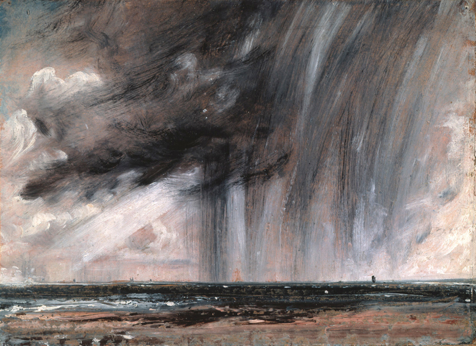

Charles D. Tarlton
Northampton, Massachusetts, USA
In the Moment:
Constable’sSeascape Study with Rain Clouds  The world is wide, no two days are alike, nor even two hours; neither were there ever two leaves of a tree alike since the creation of all the world . . . — John Constable
What could be more impossible to paint than the shapes and unstable configuration of clouds? The painter gazes, marks the canvas, and looks up; the clouds have turned, twisted, swelled into something new. They present moving targets in time, story rather than image. They cannot be captured no matter how fast the painter paints. you can feel the speed
of his desperate laying on
paint with urgency
meaning to capture the smoke
to reproduce falling rain he rides the raindrops
down with quick slashing brushstrokes
hammering the sea
stirring up the salted waves
frozen in their whited surf frozen wisps, the black
racing clouds, stilled by his brush
hang impossibly
in the petrified stone air
as tiny ships hesitate |